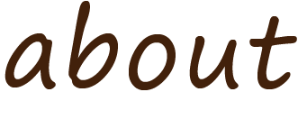

わたしについて

牧浦 和奏 まきうら わかな
1996年 兵庫県生まれ
google mapでカフェとご飯屋さんを探すことが好きです。
これまでは事務職1年半、営業職2年の経験があります。
どちらもお客様のお話を聞くことが多く、困りごとに寄り添い、解決策を提案していました。
利益のためだけでなくより問題解決に近い部分で顧客に寄り添った提案をしていきたいと思い、ゼロからイチを作り上げるwebデザインの勉強中です。
わたしの強み
お客様の気持ちに寄り添い、何を求めているかを考えます。
接客業でも常に目を配り、先回りして行動し、お客様に気持ちよく過ごしていただけるよう努めていました。
前職ではお客様との関係作りのため、ヒアリングに力を入れていました。
選択肢を与えてお客様にとって答えやすいような質問を考えたり、得た回答からなぜそう思うのか、等深掘りしてお客様の大切にしているポイントを探し出すようにしていました。
前職でもわからないことがあればメモをとり、終業後にすぐに確認するようにしたり、関連知識についても追加で勉強していました。
仕事以外でも気になったことはすぐに調べるタイプです。